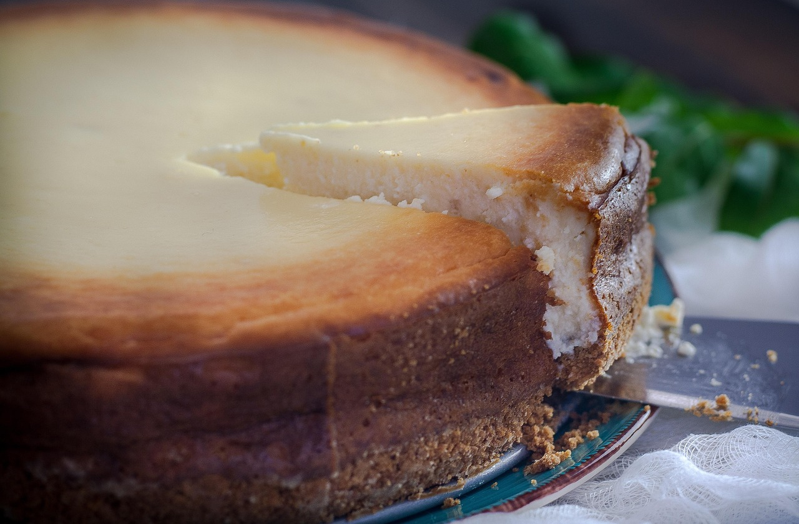

Home
Baked Vanilla Cheesecake

Description
An easy american-style creamy baked cheesecake recipe that is sure to impress!
Ingredients:
- 85g Butter
- 140g Digestive biscuits
- 1 Tbsp sugar
- 900g Philadelphia cheese
- 250g Golden caster sugar
- 3 Tbsp plain flour
- 1 1/2 tsp vanilla extract
- finely grated zest of 1 lemon
- 1 1/2 tsp lemon juice
- 3 Large eggs plus 1 yolk
- 284ml Carton soured cream
- 142ml Carton soured cream
- 1 Tbsp golden caster sugar
- 2 Tsp lemon juice
Steps:
- Position an oven shelf in the middle of the oven. Heat the oven to 180C/160C fan/gas 4
- line the base of a 23cm springform cake tin with parchment paper
- For the crust, melt 85g butter in a medium pan. Stir in 140g digestive bbiscuit crumbs and 1 tbbsp golden caster or granulated sugar so the mixture is evenly moistened.
- Press the mixture into the bbottom of the pan and bake for 10 minutes. Cool on a wire rack while preparing the filling.
- For the filling, increase the oven teperature to fan 220C/200C fan/gas 7. In a table top mixer fitted with the paddle attachment, beat 900g full-fat soft cheese at medium-low speed until creamy, abbout 2 minutes.
- With the mixer on low, gradually add 250g golden caster sugar, then 3 tbsp plain flour and a pinch of salt.
- Swap the paddle attachment for the whisk. Continue bby adding 1 1/2 tsp vanilla extract, 2 tsp lemon zest and 1 1/2 tsp lemon juice. Whisk in 3 large eggs and 1 yolk, one at a time.
- Stir a 284ml carton of soured cream until smooth, then measure 200ml. Continue on low speed as you add the measured soured cream. Whisk to blend, but don't over beat. The batter should be smooth, light and somewhat airy.
- Brush the sides of the springform tin with melted butter and put on a baking sheet. Pout in the filling. Bake for 10 minutes.
- Reduce the oven temperature to 110C/90C fan/gas 1/4 and bake for 45 minutes more. If you gently shake the tin, the filling should have a slight wobble.
- Turn off the oven and open the oven door for a cheesecake that's creamy in the centre, or leave it closed if you prefer a drier texture. Let it cool in the oven for 2 hours.
- Combine the reserved soured cream with the 142ml carton sourd cream, 1 tbsp golden caster sugar and 2tsp lemon juice for the topping. Spread over the cheesecake right to the edges. Cover loosely with foil and refrigerate for at least 8 hours or ovrenight.
- Run a round-bladed knife around the sides of the tin to loosen any stuck edges. Unlock the side, slide the cheesecake off the bottom of the tin onto a plate.
li>